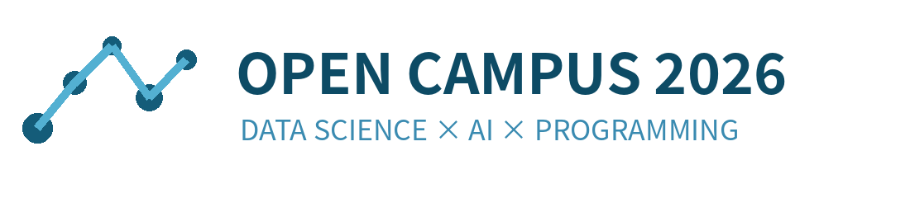
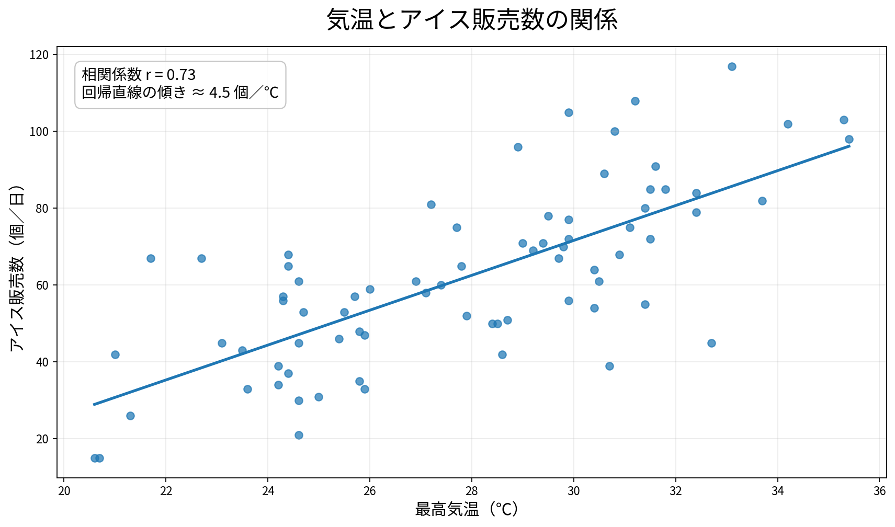
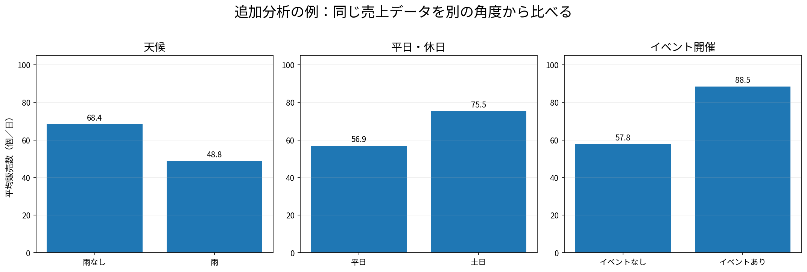

| 列 | 意味 |
|---|---|
temperature_c |
その日の最高気温 |
rain |
雨が降ったか |
weekend |
土日か |
event |
近くでイベントがあったか |
ice_sales |
アイスの販売数 |
| date | temperature_c | rain | weekend | event | ice_sales |
|---|---|---|---|---|---|
| 2026-06-01 | 20.6 | yes | no | no | 15 |
| 2026-06-02 | 21.0 | no | no | no | 42 |
| 2026-06-03 | 23.1 | no | no | no | 45 |
| 2026-06-04 | 25.9 | no | no | no | 47 |
CSVデータ → Codexへの指示 → Python → グラフ → 人間の判断
data/ice_sales.csv を読み、Pythonで次を実装してください。
- 気温とアイス販売数の散布図
- 一次回帰直線
- Pearsonの相関係数
- 日本語のタイトル、軸名、単位
- outputs/temperature_vs_sales.png に保存
- データ件数、相関係数、傾きを表示
AIの説明 → 変更ファイル → 実行結果 → 生成されたグラフ

選ばれた2群で平均販売数を比較し、平均値と件数を棒グラフに表示してください。

| このデータから言える | このデータだけでは言えない |
|---|---|
| 気温と販売数に正の関係がある | 気温だけが販売数を決める |
| 雨・土日・イベントで平均が違う | すべての店でも同じ結果になる |
| 75日分の傾向を数値で示せる | 来年の販売数を必ず当てられる |
AIは答えを決めるものではなく、
仮説を何度でも試せる相棒